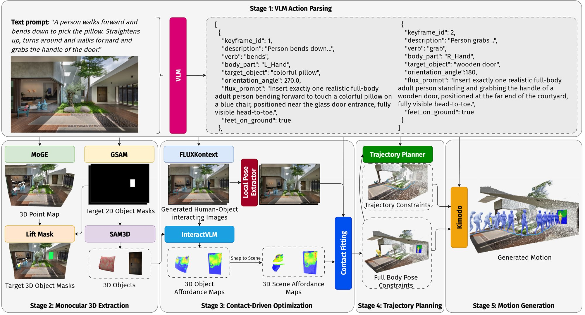
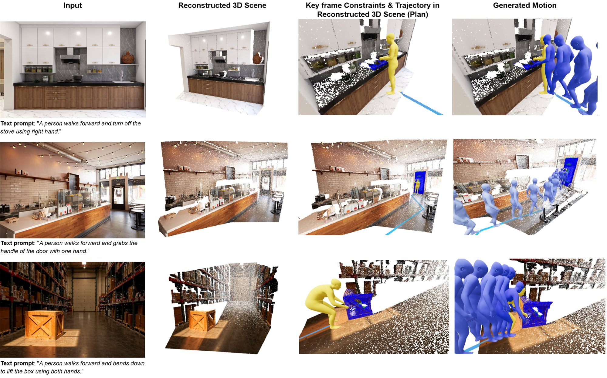
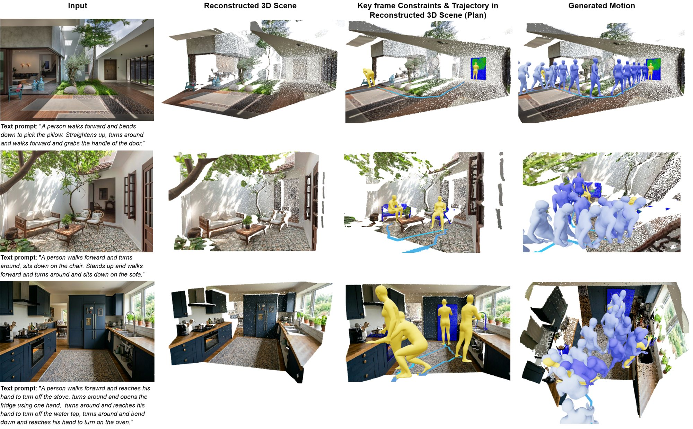
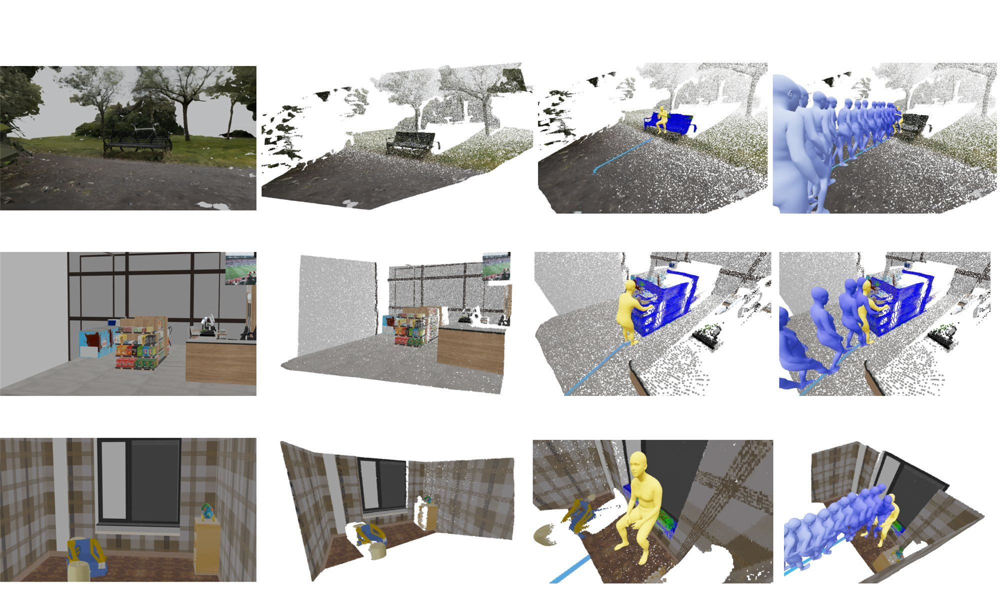
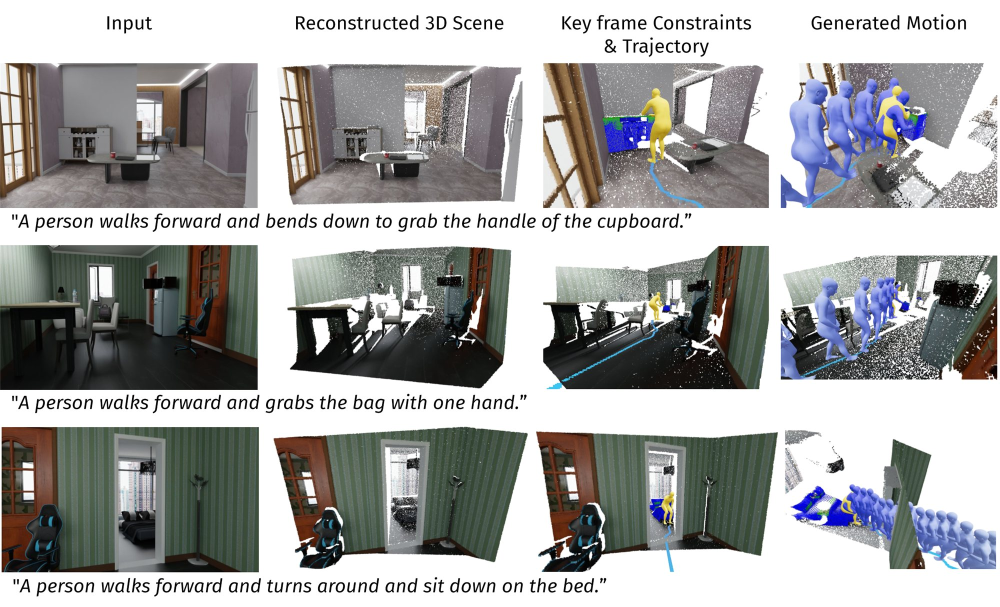

Given a single image of a room and a sentence such as “a person walks to the black armchair and sits down,” producing a 3D motion sequence of a virtual person performing the described action is out of reach for existing methods. Scene-conditioned methods need hours of paired (scene, motion, language) capture. Zero-shot methods need a pre-scanned 3D scene. Image-based methods produce only static poses. We propose a training-free pipeline that synthesizes scene-aware human-scene interaction (HSI) motion from a single RGB image and a free-form text prompt, with no HSI-specific training and no pre-scanned 3D scene. The key observation is that every needed capability already exists as a frozen foundation model: the bottleneck is composition, not capability.
Our method, ENACT, uses a vision-language model (VLM) for high-level reasoning. The VLM parses the input image and prompt into one structured keyframe per sentence, listing the action verb, the body part, the target object, a six-bin contact yaw, an image-edit prompt, and a foot-grounding flag. The keyframe then drives six frozen specialists: a monocular 3D model for the scene point cloud, an open-vocabulary segmenter for object localization, a single-view mesh reconstructor for object geometry, an instruction-following image editor for a synthetic interaction image, an image-conditioned human-mesh recoverer for pose initialization, and a 2D-grounded 3D contact predictor for object affordance. Per-keyframe contact poses are optimized under a whole-body diffusion prior, and a constraint-conditioned motion diffuser connects successive keyframes into one continuous motion.
ENACT achieves the lowest mean and maximum scene penetration and the lowest foot sliding among all baselines on a standard HSI benchmark, despite consuming the smallest input. ENACT also generalizes to synthetic datasets and to in-the-wild phone images, including chained multi-step interactions.

Stage 1 – VLM action parsing. A frozen VLM turns the image and instruction into one structured keyframe per sentence. Stage 2 – Monocular 3D extraction. MoGe recovers a metric scene point map, Grounded-SAM segments the target object and floor, and SAM 3D completes the object mesh. Stage 3 – Contact-driven optimization. FLUX-Kontext inserts a person performing the interaction, GVHMR initializes the pose, InteractVLM predicts object affordances that are snapped onto the measured scene, and the pose is fitted to the contacts under the DPoser-X whole-body prior. Stage 4 – Trajectory planning. A* plans an obstacle-aware walk on the walkable floor. Stage 5 – Motion generation. Kimodo infills walking, interaction, and transition phases into one continuous motion.

ENACT generalizes to uncurated photos, producing contact-consistent motions despite noisy monocular reconstruction.

A multi-sentence prompt is executed as one continuous motion: each sentence becomes a keyframe, the planner connects successive keyframes on the walkable region, and a transition phase bridges interaction segments.

Columns: input image, reconstructed scene, keyframe constraints and planned trajectory, and generated motion.

Generalization to synthetic TRUMANS scenes without per-scene tuning.